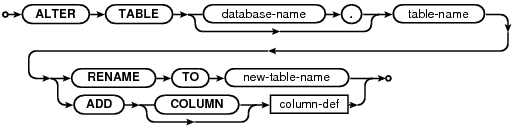

Choose any three.
|
|
SQL As Understood By SQLite
ALTER TABLE
alter-table-stmt:

SQLite supports a limited subset of ALTER TABLE. The ALTER TABLE command in SQLite allows the user to rename a table or to add a new column to an existing table. It is not possible to rename a column, remove a column, or add or remove constraints from a table.
The RENAME TO syntax is used to rename the table identified by [database-name.]table-name to new-table-name. This command cannot be used to move a table between attached databases, only to rename a table within the same database.
If the table being renamed has triggers or indices, then these remain attached to the table after it has been renamed. However, if there are any view definitions, or statements executed by triggers that refer to the table being renamed, these are not automatically modified to use the new table name. If this is required, the triggers or view definitions must be dropped and recreated to use the new table name by hand.
If foreign key constraints are enabled when a table is renamed, then any REFERENCES clauses in any table (either the table being renamed or some other table) that refer to the table being renamed are modified to refer to the renamed table by its new name.
The ADD COLUMN syntax is used to add a new column to an existing table. The new column is always appended to the end of the list of existing columns. The column-def rule defines the characteristics of the new column. The new column may take any of the forms permissable in a CREATE TABLE statement, with the following restrictions:
- The column may not have a PRIMARY KEY or UNIQUE constraint.
- The column may not have a default value of CURRENT_TIME, CURRENT_DATE or CURRENT_TIMESTAMP.
- If a NOT NULL constraint is specified, then the column must have a default value other than NULL.
- If foreign key constraints are enabled and a column with a REFERENCES clause is added, the column must have a default value of NULL.
Note also that when adding a CHECK constraint, the CHECK constraint is not tested against preexisting rows of the table. This can result in a table that contains data that is in violation of the CHECK constraint. Future versions of SQLite might change to validate CHECK constraints as they are added.
The execution time of the ALTER TABLE command is independent of the amount of data in the table. The ALTER TABLE command runs as quickly on a table with 10 million rows as it does on a table with 1 row.
After ADD COLUMN has been run on a database, that database will not be readable by SQLite version 3.1.3 and earlier.